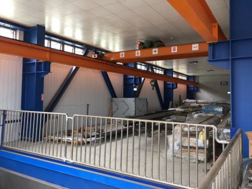
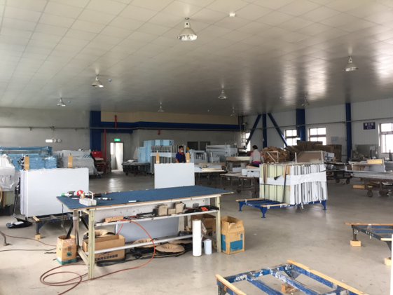

廠區與樓層配置

廠區 1F
剪床、沖床、彎床、焊接研磨、品檢包裝送烤。

廠區 2F
擠型料區、擠型加工機，支援多樣型材加工。

廠區 3F
烤漆回廠組裝、背襯骨、空縫板、鋁擠型、膠條。
國靖金屬成立於 1986 年，座落於新竹縣湖口鄉，專注於建築用金屬帷幕牆板之加工製造。三十多年來承攬眾多知名專案，品質深獲肯定。
我們秉持「客戶是夥伴」的精神，優先滿足專案需求，並以生產與品檢獨立管理確保品質一致。
提供鋁單板、鍍鋅鋼板、不鏽鋼板之精密鈑金加工與造型折彎。
專精於高耐久、防火、易清潔的琺瑯牆板加工，適用捷運、隧道及公共建設。
依造型需求提供蜂巢板、鋁複合板等客製化解決方案。
產能與交期彈性大，能滿足大型與多變型專案需求
| 產品類型 | 月產能 |
|---|---|
| 平板 | 20,000 ㎡/月 |
| 角板 | 10,000 ㎡/月 |
| 異型板 | 5,000 ㎡/月 |
| 標準弧板 | 3,000 ㎡/月 |
| 造型滿焊弧板 | 1,000 ㎡/月 |
剪床、沖床、彎床、焊接研磨、品檢包裝送烤。
擠型料區、擠型加工機，支援多樣型材加工。
烤漆回廠組裝、背襯骨、空縫板、鋁擠型、膠條。
從圖面整理到包裝出貨，全程嚴謹控管
拆圖分類與沖床程式準備。
展開尺寸與加工方式確認。
電子尺控管尺寸精度。
輸入程式代號與固定爪位。
折彎形狀、角度與尺寸確認。
補強缺口與造型滿焊。
沙輪機與研磨機精修外觀。
角度、尺寸、外觀總檢後包裝出貨。
參與台灣眾多地標性建築建設
有任何金屬加工需求，歡迎聯繫我們。
地址： 303 新竹縣湖口鄉光復南路54號
電話： 035983639
Email： kctw@ms61.hinet.net